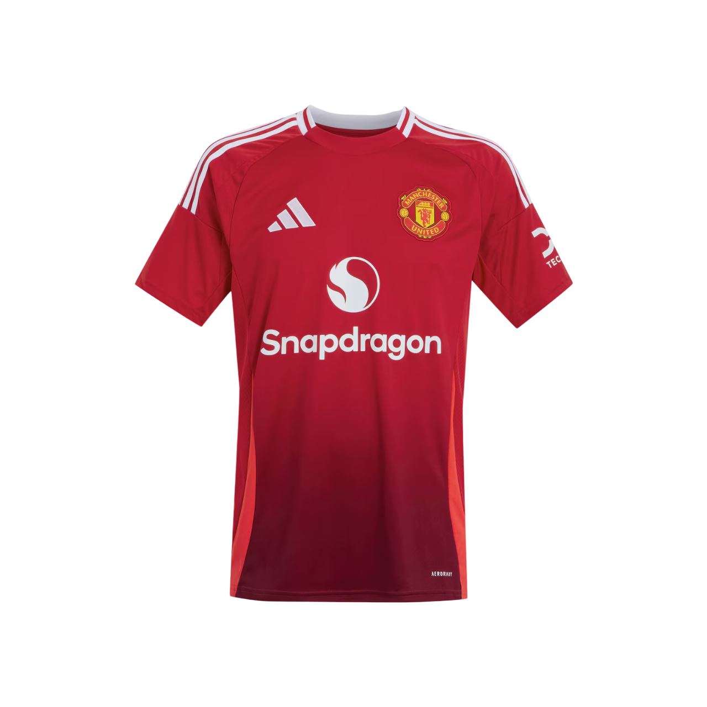

Home
Kit
Fixtures
About
Highlights

Manchester United 24/25 Home Jersey
Manchester United 24/25 Away Jersey
Manchester United 24/25 Third Jersey
Manchester United 24/25 Long Sleeve Goalkeeper Jersey
<
>